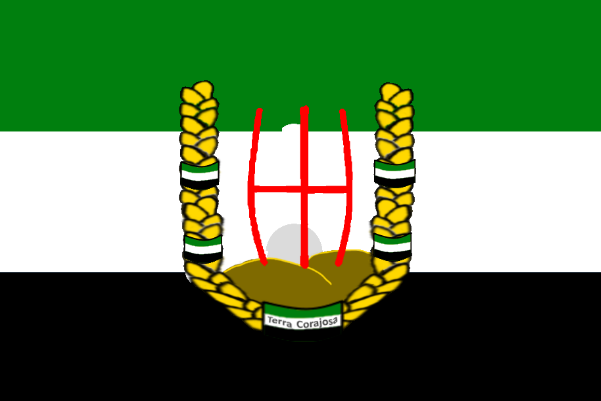

| Rozloha: | +- 30-50 Chunků[N] |
|---|---|
| Hlavní Město: | Neznámé[N] |
| Stavby: | Celnice Domy na prodej Dvojpatrový obchod Úřad Škola Hospoda Nether Portál Hromosvody |
|---|
| Počet Obyvatel: | 5 |
|---|---|
| Jazyky: | Čeština |
| Náboženství: | Ateismus - 100%[N] |
| Státní Zřízení: | Loutkový Stát |
|---|---|
| Vznik: | 8. Července 2022[N] |
| Zánik: | 22. Července 2022 |
| Král: | Graphite (Teoreticky) |
| Měna: | Corajská Blita (Neimplementovaná) Rudy |
| Předcházející | Následující |  První Republika Terra Corajosa První Republika Terra Corajosa |
 Druhá Republika Terra Corajosa |
|---|
Terra Corajosa byl loutkový stát Norte Tubaero v Třetí Sezóně FlaMaCraftu založena po uzavření mezi Terra Corajosa a Norte Tubaero. Žili zde:
Po uzavření Unifikační Smlouvy, Terra Corajosa se stala Loutkovým Státem, avšak s průměrnými pravomocemi.
Pár dní poté se začali do státu přistěhovávat lidi. První se přistěhoval dead2009cz, jenž se projevil jako prominentní osobnost ve státě. Následně se přistěhoval toast, jenž byl pár dní poté jmenován ministrem agrikultury díky jeho zapálenosti do farmaření. A nakonec se přistěhovali Lukyn a Kovalda. A nastala zlatá éra národa která trvala ještě hodně dlouho.
Neznámo kdy, ale přibližně někdy v téhle době se událi volby, avšak nikdo jiný nekandidoval takže vláda se nezměnila.
Okolo 22. Července se lid Terra Corajosa rozhodl o nezávislost, a se shválením od prezidenta Norte Tubaero se tak stalo.
Symbolika vlajky je prostá. Znak republiky na trikoloře Norte Tubaero.